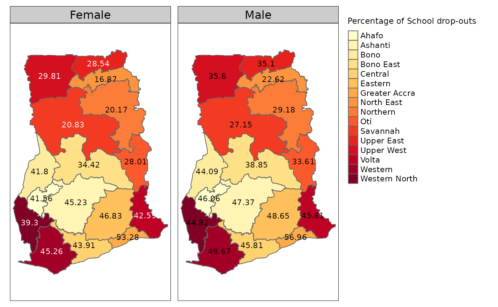

Choropleth_map_Ghana_2021_School_Attendance_Indicators
Source:vignettes/Choropleth_map_Ghana_2021_School_Attendance_Indicators.Rmd
Choropleth_map_Ghana_2021_School_Attendance_Indicators.RmdLoad required packages
library(rGhanaCensus)
library(sf)
#> Linking to GEOS 3.12.1, GDAL 3.8.4, PROJ 9.4.0; sf_use_s2() is TRUE
library(tmap)
library(dplyr)
#>
#> Attaching package: 'dplyr'
#> The following objects are masked from 'package:stats':
#>
#> filter, lag
#> The following objects are masked from 'package:base':
#>
#> intersect, setdiff, setequal, union
library(magrittr)Example 1
Create a interactive map with the package tmap and data
from the package rGhanaCensus that displays the regional
distribution of the Percentage of students 3 years or older who have
dropped out of school.
Load geometry data Ghana_2021_school_attendance_geometry
from rGhanaCensus package.
data("Ghana_2021_school_attendance_geometry", package = "rGhanaCensus")Convert it to sf data frame and assign a new name. In
this example, “Ghana_edu_sf” will be the name of the sf
data frame created.
Ghana_edu_sf<- sf::st_as_sf(Ghana_2021_school_attendance_geometry)The code Ghana_edu_sf %>%filter(Locality=="Urban")
subsets the data frame and retains only the rows that the survey
respondents came from Urban areas.
Ghana_edu_sf %>%filter(Locality=="Rural") can be used
to retain observations from Rural areas.
Use tmap_mode("view") to create interactive map. A
static map is plotted here with tmap_mode("plot")
Map displaying Percentage of School Drop-outs from Total Respondents in each Region
#Use tmap to create interactive map
tmap_mode("plot")
#> ℹ tmap mode set to "plot".
Ghana_edu_sf %>%
dplyr::filter(Locality=="Urban") %>%
tm_shape()+
tm_polygons(id="Region", col="Region",palette="YlOrRd",
title="Percentage of School drop-outs")+
tm_text(text="Percent_Dropped_out_of_School", size=0.7)+
tm_facets(by="Gender")
#>
#> ── tmap v3 code detected ───────────────────────────────────────────────────────
#> [v3->v4] `tm_tm_polygons()`: migrate the argument(s) related to the scale of
#> the visual variable `fill` namely 'palette' (rename to 'values') to fill.scale
#> = tm_scale(<HERE>).[v3->v4] `tm_polygons()`: use 'fill' for the fill color of polygons/symbols
#> (instead of 'col'), and 'col' for the outlines (instead of 'border.col').[v3->v4] `tm_polygons()`: migrate the argument(s) related to the legend of the
#> visual variable `fill` namely 'title' to 'fill.legend = tm_legend(<HERE>)'[cols4all] color palettes: use palettes from the R package cols4all. Run
#> `cols4all::c4a_gui()` to explore them. The old palette name "YlOrRd" is named
#> "brewer.yl_or_rd"Multiple palettes called "yl_or_rd" found: "brewer.yl_or_rd", "matplotlib.yl_or_rd". The first one, "brewer.yl_or_rd", is returned.
#> [plot mode] fit legend/component: Some legend items or map compoments do not
#> fit well, and are therefore rescaled.
#> ℹ Set the tmap option `component.autoscale = FALSE` to disable rescaling.
The code tm_facets(by="Gender") specifies facets
(multiple maps) by Gender.
Example 2
Create a interactive map with the package tmap and data
from the package rGhanaCensus that displays the
regional distribution of population densities of students 3 years or
older who have dropped out of school.
#Load geometry data
data("Ghana_2021_school_attendance_geometry", package = "rGhanaCensus")
#Convert to sf data frame
Ghana_edu_sf<- sf::st_as_sf(Ghana_2021_school_attendance_geometry)Use tmap_mode("view") to create interactive map. A
static map is plotted here with tmap_mode("plot") .
The convert2density argument in the
tm_polygon function calculates the population density using
the raw count values of the variable Dropped_out_of_School
where the area size is in this case approximated from the shape
object.
Map displaying the Regional Population Density of School Drop-outs
tmap_mode("plot")
#> ℹ tmap mode set to "plot".
Ghana_edu_sf %>%
dplyr::filter(Locality=="Urban") %>%
tm_shape()+
tm_polygons(id="Region",col="Dropped_out_of_School", palette = "RdPu",
style="kmeans", convert2density = TRUE,
title="Population density of School drop-outs")+
tm_text(text="Region", size=0.7)+
tm_facets(by="Gender")
#>
#> ── tmap v3 code detected ───────────────────────────────────────────────────────
#> [v3->v4] `tm_polygons()`: instead of `style = "kmeans"`, use fill.scale =
#> `tm_scale_intervals()`.
#> ℹ Migrate the argument(s) 'style', 'palette' (rename to 'values') to
#> 'tm_scale_intervals(<HERE>)'[v3->v4] `tm_polygons()` `convert2density` is deprecated.
#> ℹ Divide the variable values by the polygon areas manually (obtain the areas
#> with 'sf::st_area()').[v3->v4] `tm_polygons()`: migrate the argument(s) related to the legend of the
#> visual variable `fill` namely 'title' to 'fill.legend = tm_legend(<HERE>)'[cols4all] color palettes: use palettes from the R package cols4all. Run
#> `cols4all::c4a_gui()` to explore them. The old palette name "RdPu" is named
#> "brewer.rd_pu"Multiple palettes called "rd_pu" found: "brewer.rd_pu", "matplotlib.rd_pu". The first one, "brewer.rd_pu", is returned.